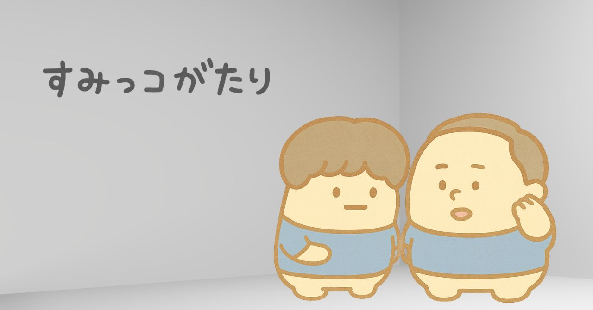
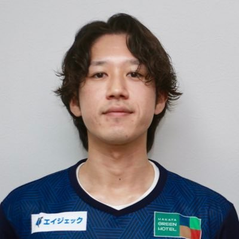
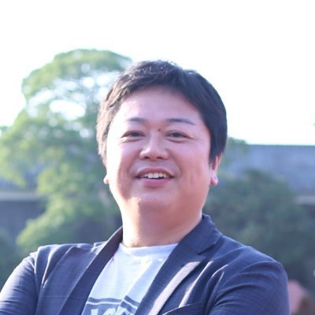

世の中の“すみっコ”を拾い上げて語るチャンネル。網羅はむずかしい。でも、すみっコなら語れる。
網羅した話は聞きにくい。でも、すみっコなら聞ける。私たちが選ぶのは、いつもすみっコのほうです。
定番ではなく すみっコ
まんなかではなく 寄り道
正解よりも おもしろさ
知識よりも 切り口
すみっコこそ、おもしろい！

フリーランス広報マン／元美容師

フリーランスライター／元テレビ制作AD
定番からちょっと外れた、寄り道だらけのおしゃべり。毎回ひとつ、すみっコを拾います。